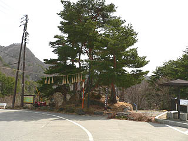

芦ノ尻道祖神/長野県長野市
長野県の聖高原のさらに奥地、今は長野市に編入されているが元更級郡大岡村の村はずれ。
車で走っていても自分が一体どこを走っているのか良く分からなくなってくるような山道に芦ノ尻道祖神がある。
長野オリンピックの閉会式に登場して一躍長野県のシンボルに躍り出た（一部では「何だったんだ、アレ」という声もあったが）藁製の人形道祖神である。
長野市はこの道祖神が欲しくて大岡村を編入したのではなかろうか。あ、そんなわけないですね。
人形道祖神といえば藁人形でつくられた大人形で、大抵は村境に置かれて疫病や悪霊の防護、豊穣無病息災を祈念する役目を負っている。
このサイトでも何度か紹介した通り、東北地方や新潟県にその分布が集中している。
長野県で人形道祖神が存在している事自体が珍しいのだが、それ以上に長野で道祖神といえば男女で抱き合っている石像を想像される貴兄も多いかと思う。
←ホラ、こんな感じの。
そんな「信州の路傍に佇む幸せの道祖神」的な感覚を根底から覆す道祖神を紹介しまっす。

道祖神がいるロケーションはこんなところ。集落の外れの山道のカーブにあり見晴しの良い場所だ。
大きな杉の木の下に藁でつくられた飾りと共に石碑のようなモノが見える。
近寄ってみると・・・
わぉ。グレイテスト道祖神。
これを異形と呼ばずして何を異形というのだろう。滅茶苦茶勢いのある造型だ。
これまで東北の人形道祖神を幾つか見て来たが、いずれの類型にも属さないまさに異形中の異形。
まず身体がない。普通人形道祖神といえば木のお面に藁の身体というのが一般的だがここのは顔だけ。
それだけでもインパクト大だというのに極め付けに顔が変。
どっちかというとバケモノとか妖怪に近いルックスだが、道祖「神」と名乗るからには、まあ、神様の一種なのであまりおちょくるのも気が引けるのだが。
ゴーグルのようなくっつき目、豚鼻、ドラヤキみたいな口、笑ってるんだか起こってるんだか一切ナゾの表情。
全てにおいて・・・やっぱ変。
アップで迫ってみましょう。
どうですか、お客さん。この威圧感10000パーセントの表情。
こんなの50インチプラズマテレビで見たら赤ちゃんなんてパンパースがパンパンになる位失禁しちゃいますわ。
まあ、これなら疫病も悪霊も尻尾を巻いて逃げて行きますな。
さて。
「路傍に佇む幸せの双体道祖神」帝国である信州においてひときわ異彩を放つ芦ノ尻の人形道祖神。そのルーツはというと・・・
ここで私のバイブル「人形道祖神」（神野善治 白水社）に登場願おう。
人形道祖神のコンプリートガイドだけに勿論、芦ノ尻人形道祖神もエントリーされてました。
それによるとここの道祖神は「道祖神」と彫られた石塔に藁を巻いて作られており、毎年1月7日に各家庭から松飾りの縄を運び、道祖神の石塔に飾り付けているという。ちなみに石塔の建立は明治元年。
後ろから見た図。石塔に藁が巻かれているのがお判りいただけるだろうか。
東北の道祖神の飾り付け着替え化粧直しは春や秋に行われるケースが多いのでそっち方面の人形道祖神の習俗がワープして長野にやって来たわけではないようだ。
どちらかというと正月の松飾りを各家庭で持ち寄る、というのはどんど焼き、左義長といった小正月の燃やし系行事にその類似点を見る事が出来る。
実際、道祖神の飾り付けが終わった夜には古い縄飾りを燃やすという事なので、この異形の道祖神はどんど焼きが極端に発達したカタチと考えられる。
また、一般的などんど焼きは竹でフレームを組み藁を詰めて円錐状の塔のようなモノを作ってそれを燃やすのだが、中にはその円錐に手と顔をつけて巨大な人形にする地方もある。芦ノ尻の近く長野市篠之井にも大きな藁人形を小正月に燃やすという風習がある。
←道祖神の前にあったどんど焼きの跡
これは憶説なのだが元々、芦ノ尻の道祖神も市後沢のように松飾りを上に乗せたり縛り付けたりといった程度の形状だったのだ思う。
下は芦ノ尻の近くにあった市後沢というところで見かけた石塔。
何のカミサマかは確認出来なかったが、藁で編んだ宇宙戦艦ヤマトの波動砲みたいなモノが幾つも並んでいた。
この波動砲みたいなのは正月の門松に付けられる「ヤス」という飾り物。珍しいカタチの飾り物だが、信州では比較的良く見られる形状のものだそうな。
道祖神の右には市後沢と同じようなヤスや注連縄が付けられている。
こんな感じで注連縄やヤスを付けてる内にどんど焼きの大人形の記憶がミックスして顔に変化していったのではなかろうか。
一見、突然変異種に見える道祖神だが、ヤスの形状と奉納、どんど焼きと大人形の習俗、そんな幾つかの要素が混ざりあって誕生したと私は考える。
まあ、いずれにせよ奇跡のような偶然だとは思うし、やっぱり異形の神様には違いないのだが。
2006.4.
珍寺大道場 HOME